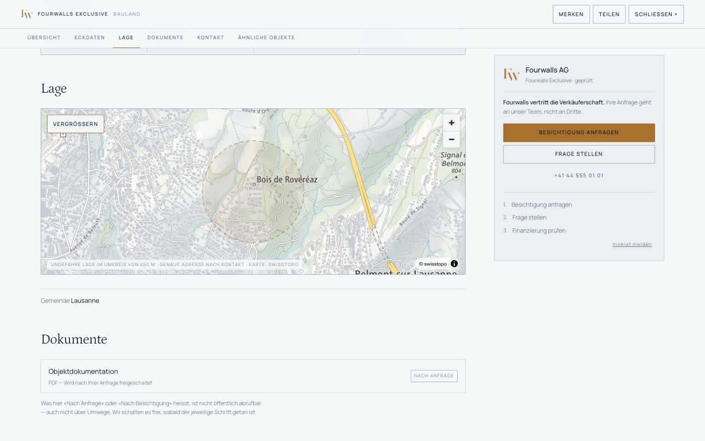
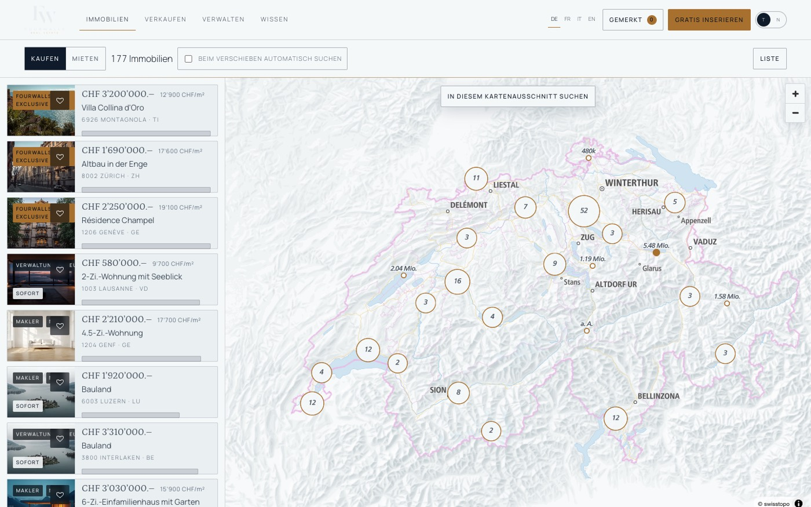
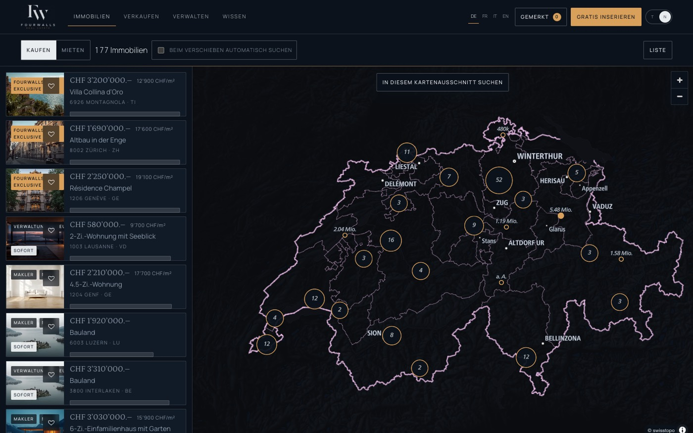
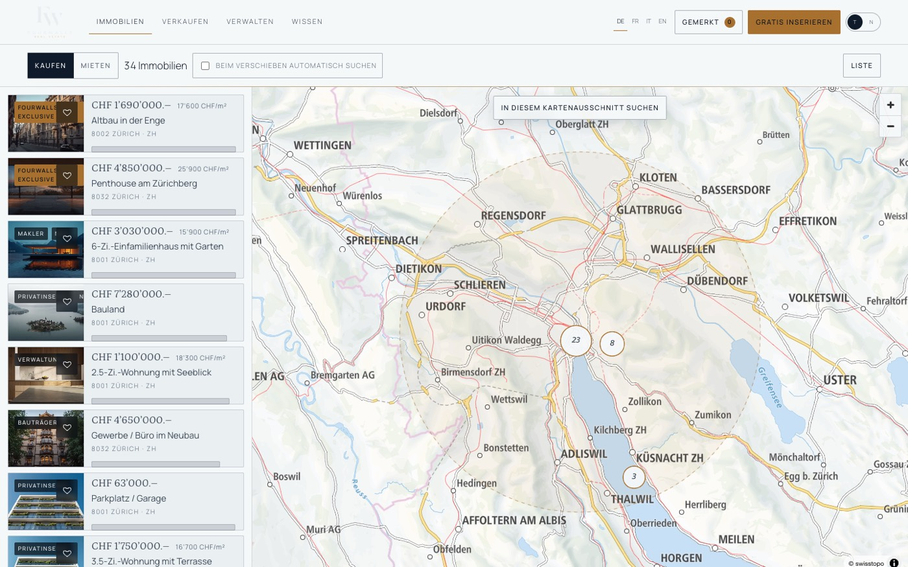
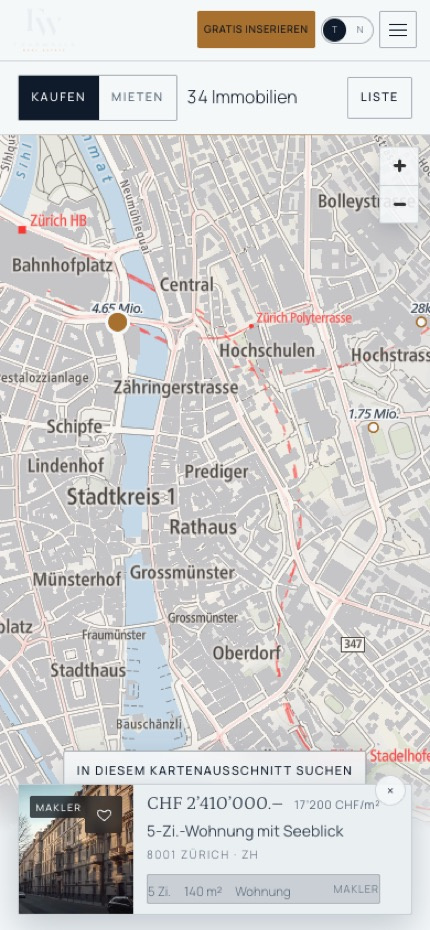
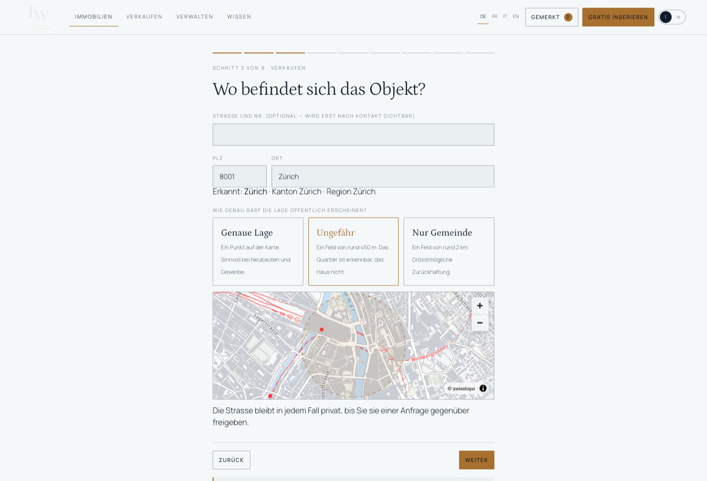

P2 hat den Bestand tragfähig gemacht. P3 setzt ihn auf echte Schweizer Geografie: amtliche Vektorkacheln, ein Ortsverzeichnis mit stabilen Kennungen, ein Suchvertrag, der später ohne Umbau auf einen Server zeigt — und eine Karte, die nicht nur zeigt, sondern sucht.
Bis P2 war die Karte eine Zeichnung: schematische Ringe auf einem Raster, Koordinaten aus einer Zufallsstreuung um den Ortsmittelpunkt. Das genügte, um die Gestalt zu prüfen, und wäre in einem Produkt eine Täuschung gewesen. P3 ersetzt jede dieser Vereinfachungen durch etwas, das trägt:
Eine Anfrage ist ein einziges Objekt: Transaktionsart, Ort als Entität, Umkreis, Kartenausschnitt, Objektart, Preis-, Zimmer-, Flächen- und Baujahrgrenzen, Etage, Verfügbarkeit, Merkmale, Quelle, Sortierung, Seite. Eine Antwort ist ebenso festgelegt: Treffer, Gesamtzahl, Seite, ob mehr folgt, wie der Ort verstanden wurde, Facetten, Dauer und Herkunft.
Der heutige Beantworter arbeitet im Browser. Er lässt sich in einer Zeile austauschen:
FWSUCHE.SearchProvider.setzeAdapter(new HttpSearchProvider("/api/suche"));Die geografische Auslegung ist bewusst in einer festen Reihenfolge: Kartenausschnitt schlägt Umkreis, dieser schlägt Region, Kanton, Postleitzahl, Gemeinde. Die Antwort sagt, welche Regel gegriffen hat — die Oberfläche muss nicht raten, ob sie gerade einen Ausschnitt oder einen Umkreis anzeigt.
Für die Karte gibt es einen zweiten Modus: statt einer Seite liefert die Anfrage alle Punkte des Ergebnisses. Die Liste bleibt bei 24 Einträgen, die Karte kennt alle 177.
| Art | Kennung | Was daran hängt |
|---|---|---|
| Gemeinde | ort-zuerich | Koordinate, Kanton, Postleitzahlen, Namen in vier Sprachen, Schreibvarianten |
| Postleitzahl | plz-8001 | Zugehörige Gemeinde |
| Kanton | kt-VD | Mittelpunkt, Umschliessungsrechteck, Name in vier Sprachen |
| Region | rg-tessin | Kantonsmenge, Umschliessungsrechteck |
Diese Kennungen stehen in der Adresszeile. Ein geteilter Link trifft denselben Ort wie die Sitzung, aus der er stammt — auch in einer anderen Sprache, weil die Kennung sprachfrei ist und nur die Beschriftung wechselt. Ältere Linkformen (?ort=Zürich, ?ort=kt:VD, ?ort=8001) werden weiterhin gelesen und beim ersten Aufruf auf die stabile Form normalisiert.
Die Suche verzeiht: Umlaute, Akzente, ein vertauschter Buchstabe, «Zuerich» statt «Zürich», «Genève» im deutschen Text. Eine vierstellige Postleitzahl ohne Treffer bietet den Postkreis an, statt eine leere Liste zu zeigen.
| Kandidat | Schlüssel nötig | Kosten | Entscheidung |
|---|---|---|---|
swisstopo lightbasemap | nein | kostenlos für die Schweiz und Liechtenstein | gewählt — amtliche Schweizer Geodaten, beste Datenqualität im Land, keine Zählwerke |
OpenFreeMap positron | nein | kostenlos, spendenfinanziert | Rückfall, wenn swisstopo nicht antwortet |
| MapTiler / Mapbox | ja | ab Aufrufkontingent | verworfen — ein Browser-Schlüssel ist öffentlich; das lohnt nur, wenn er etwas kann, das die freien Dienste nicht können |
Die Bibliothek ist MapLibre GL JS 5.6 (BSD-3-Klausel), geladen von cdnjs und erst dann, wenn jemand die Karte tatsächlich öffnet.
Es wird kein öffentlicher Geokodierdienst angesprochen — insbesondere nicht Nominatim, dessen Nutzungsregeln für ein Produkt dieser Art nicht gedacht sind. Die Ortssuche läuft gegen das eigene Verzeichnis. Das hat eine klare Grenze, die im Code steht: kannAdressen: false. Strassen und Hausnummern kann dieses Verzeichnis nicht auflösen. Für eine Produktion wären die amtlichen Gebäude- und Wohnungsdaten (GWR) oder ein Adressdienst mit Vertrag der nächste Schritt — hinter derselben Schnittstelle, ohne Änderung an der Oberfläche.
Jedes Objekt trägt jetzt einen Geo-Block. Entscheidend ist die Trennung: es gibt eine gespeicherte Lage und eine Anzeigelage mit einer Genauigkeitsangabe. Öffentlich ist ausschliesslich die Anzeigelage.
| Stufe | Was öffentlich erscheint | Bestand |
|---|---|---|
exakt | Ein Punkt | 11 Objekte |
ungefaehr | Ein Feld von rund 450 m | 206 Objekte |
gemeinde | Ein Feld von rund 2 km | 103 Objekte |
Die Unschärfe entsteht nicht dadurch, dass die zugrundeliegenden Daten verfälscht würden. Gespeichert bleibt, was stimmt; veröffentlicht wird, was freigegeben ist. Und es wird kein fiktives Haus auf ein reales Wohngebäude gesetzt: bei ungenauer Freigabe zeigt die Karte ein Feld, keinen Punkt.

Cluster mit Anzahl, Einzelobjekte mit Preisschild, exklusive Mandate in Kupfer, belegte Objekte gedämpft. Ein Klick auf ein Cluster zoomt so weit hinein, wie es sich auflöst. Ein Klick auf ein Objekt markiert es in der Liste daneben; ein Zeigen auf die Liste hebt es auf der Karte hervor.


Wer die Karte bewegt, bekommt ein Angebot, keinen Automatismus: «In diesem Kartenausschnitt suchen». Wer es lieber automatisch mag, schaltet es oben ein. Eigene Bewegungen der Karte — das Einpassen nach einer Suche — lösen das Angebot nicht aus.
Die Ausschnittsuche führt auch die Liste nach: beide zeigen danach dieselben Objekte, und ein Hinweis sagt, dass gerade ein Ausschnitt und kein Ort die Grundlage ist.

Auf 390 Pixeln ist die Karte die ganze Fläche. Ein Tippen auf ein Objekt öffnet eine Vorschaukarte am unteren Rand — Bild, Preis, Ort, Eckdaten, Quelle — mit Schliessknopf. Zur Ergebnisliste geht es über den Umschalter oben rechts. Kein seitliches Scrollen, keine Bedienelemente unter dem Daumenballen.

Der Ortsschritt des Inserate-Assistenten war ein Freitextfeld. Jetzt wird die Postleitzahl gegen dasselbe Verzeichnis geprüft, das die Suche nutzt: Gemeinde, Kanton und Region ergänzen sich, das Ergebnis wird angezeigt. Ist ein Ort nicht im Verzeichnis, blockiert das nichts — es wird gesagt, dass die Zuordnung von Hand erfolgt.
Darunter steht die Entscheidung, die sonst niemand trifft: wie genau die Lage öffentlich erscheinen darf. Die Vorschau zeigt genau das, was Besucherinnen und Besucher später sehen.

Gemessen im Browser, Median aus fünf Läufen, mit vervielfachtem Bestand:
| Bestand | alles | Umkreis 20 km | Kartenausschnitt | gefiltert |
|---|---|---|---|---|
| 320 | 0,1 ms | 0,1 ms | 0,1 ms | 0,1 ms |
| 2 000 | 0,6 ms | 0,2 ms | 0,2 ms | 0,2 ms |
| 10 000 | 3,8 ms | 1,4 ms | 1,0 ms | 1,0 ms |
| 50 000 | 25,1 ms | 13,1 ms | 11,9 ms | 9,1 ms |
Rechnen ist also nicht die Grenze. Die Grenze ist die Auslieferung: 50 000 Inserate in den Browser zu laden, verbietet sich unabhängig davon, wie schnell danach gefiltert wird. Genau dafür ist der Vertrag da — der Wechsel auf einen Serveradapter ändert keine Zeile in der Oberfläche.
| Grösse | Wert |
|---|---|
| Bis Cluster sichtbar, kalter Start | 4,6 s |
| MapLibre GL JS über cdnjs | 207 KB |
| Portalseite gesamt, ohne Karte | 843 KB |
| Speicher, Karte offen | 21 MB |
Die 4,6 Sekunden sind der ungünstigste Fall: leerer Cache, Bibliothek, Stil, Schriften, Sprite und Kacheln über das Netz. Berührt jemand den Kartenknopf, beginnt der Ladevorgang bereits vor dem Klick; das kostete in der Messung 1,2 Sekunden weniger. Beim zweiten Öffnen in derselben Sitzung erscheint die Karte sofort.
isStyleLoaded() ist die falsche Bedingung zum Hinzufügen von Quellen: sie wartet zusätzlich auf alle Kacheln und wird nie wahr, solange der Behälter keine Grösse hat.Drei Möglichkeiten, ohne Empfehlung zur Reihenfolge — das ist eine Entscheidung, die vom Ziel abhängt, nicht von der Technik:
GeoProvider macht aus «Bahnhofstrasse 12» eine Koordinate — und aus dem Inserate-Assistenten ein Werkzeug, das die Lage kennt, statt sie zu erfragen.Fourwalls · Phase 3 · alle Objektdaten sind fiktive Demo-Daten · Kartengrundlage © swisstopo